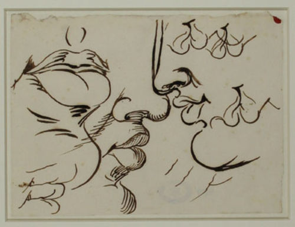

Ritorno a Frascati. La felicità del non più troppo giovane Goethe

«Bisogna scrivere come si vive, in primo luogo per noi stessi, e allora si esiste anche per chi ci è affine.» (Johann Wolfgang von Goethe, Viaggio in Italia - Corrispondenza, Albano 5 ottobre 1787). Nel 1776 Goethe, due anni dopo il grande successo de I dolori del giovane Werther, entra al servizio del duca di Sassonia-Weimar-Eisenach, uno dei circa 300 staterelli assoluti in cui era divisa la Germania. Assume un titolo nobiliare e diventa consigliere ministeriale per gli affari militari, la viabilità, le miniere e la pubblica amministrazione, ed è sovrintendente ai musei. Dieci anni dopo, nel settembre 1786, non ne può più di uffici e corti, non sopporta minimamente i tedeschi, è stanco dei suoi amori, è stufo anche di scrivere. Ha trentasette anni, lo Sturm und Drang è finito da un pezzo, lontana la stagione di Jena. Del resto, «chi vive deve essere pronto ai mutamenti». Informa del suo volere il duca Carlo Augusto, di cui era già stato precettore. Parte senza dire niente a nessuno, monta in carrozza e dalle scomode strade tedesche muove verso le pessime strade italiane. In modo insolito ed esemplare, nel periodo in cui solitamente oggi come ieri si cerca di assestare la propria vita, il poeta rifiuta un posto fisso piuttosto prestigioso e si da’ alla macchia, prendendosi così cura della propria formazione artistica.
Nei due anni nei quali attraversa i paesi e gli stati della penisola usa preferibilmente il nome di Herr Philipp Möller, di mestiere pittore, godendo di insospettati vantaggi dalla condizione di «mezzo incognito». Passando per il Brennero, giunge sul lago di Garda e quindi a Verona, Vicenza, Venezia, Ferrara e Bologna; attraversa gli Appennini, sosta a Perugia, Assisi, Civita Castellana. Quindi, giunge finalmente a Roma, dove si ferma a lungo. Muove poi verso Napoli e la Sicilia, tornando successivamente a Roma per un secondo e più duraturo soggiorno, durante il quale risiede a cento passi da Piazza del Popolo in una casa sulla Via Lata (Via del Corso). Roma è apertamente considerata come la propria città, che lo coinvolge in un definitivo «risveglio pagano». Visita a più riprese i dintorni della capitale dello Stato della Chiesa (dal 13 al 16 novembre 1786, a metà giugno, dal 25 settembre al 27 ottobre, dall’11 al 13 dicembre del 1787): Frascati, Tivoli, Albano, Castel Gandolfo, Rocca di Papa, Ariccia, Genzano, Nemi, Marino, non trascorrendo in ogni località mai più di quindici giorni consecutivi.
Nel frattempo, scrive Italienische Reise. I testi saranno pubblicati solo molti anni dopo, rielaborando più volte materiali in gran parte andati perduti; le testimonianze sono generalmente scanzonate, ricche di appunti personali sui suoi vastissimi campi d’interessi e lontane da attenzioni politiche, e più che descrivere il Paese espone le proprie impressioni. A Frascati soggiorna in un palazzo che in tempi meno felici ha ospitato anche la Casa del Fascio, uffici della pubblica sicurezza e strutture amministrative, in una strada che per un po’ si chiamò con il suo nome, ora percepibile a destra del palazzo sulla targa di Corso Italia. Il grande scrittore affrontò questo viaggio perché sentiva la necessità di «un nuovo sguardo sul mondo»: di un nuovo vedere.
Vedere in senso figurato significa “avere discernimento”: ciò è diverso dal vedere fisico, incapace di andare oltre ciò che guarda. Approfondendo l’etimologia, troviamo che in latino il perfetto del verbo ‘videor’ assume spesso il significato di “so, conosco per esperienza diretta”; ‘videris’, chi sa, il sapiente, è quindi un testimone: uno “storico”, come indica l’espressione ‘vistor’. Goethe, che ha portato testimonianze decisive nella letteratura, si è proficuamente interessato anche di diritto, ottica, botanica, chimica e chimismi, architettura e quindi disegno: la sua formazione pittorica, fondamentale in questo viaggio, ispira gli scritti e i disegni tanto di paesaggio quanto di figura umana. E così come possiamo considerare tali disegni come i segni che il suo vedere ci ha consegnato al di là delle parole, possiamo anche immaginare esistano vedute che egli non ha mai raccontato o disegnato. Ci sono quindi pagine perdute che nessuno ha mai letto, storie scritte diversamente rimaste sospese tra una data e l’altra, capaci di mostrare spiragli diversi e insoliti su quanto già conosciuto. Possiamo così incontrare Goethe a Frascati, dove era vescovo il Cardinal Duca Enrico Benedetto Stuart, discendente dei re di Scozia, mentre ferve la vendemmia.
1. Frascati, 10 ottobre 1787
L’anno vero comincia da qui. Ottobre, i giorni della vendemmia; tutta la popolazione ne è coinvolta, associando nei campi la fatica al buon umore; l’odore delle uve pigiate si diffonde per ogni vicolo, impregnando l’aria di nuvole di moschini, vespe e calabroni. Curve dall’aurora le donne colgono i frutti dai vigneti, portati dagli uomini nei bigonci; presso l’imbrunire, i carri s’inerpicano con il loro carico lungo il ciottolato della via Tuscolana. Le uve, pigiate da piedi sapienti, vanno a farsi mosto nei pozzi ricavati nelle grotte di pietra sperone, scavati in ambienti sotterranei, che gli osti fanno cordialmente visitare agli ospiti più graditi.
Sono voluto tornare da solo in questa città, ripassare in questa locanda allegra, posta proprio accanto alla cattedrale, esattamente dall’altra parte rispetto a quella in cui ero solito risiedere. La locanda Campana è al piano terra del palazzo della famiglia Di Mattia, ha prezzi elevati ma offre buon trattamento; in quest’altra invece ci sono passavo volentieri durante le passeggiate cittadine. Ha un ambiente che concilia il pellegrino e lo fa ritrovare improvvisamente a casa. Buono il cibo, tipico della cucina romana, buono il vino nelle botti rimasto dall’annata precedente, buona la compagnia, schietta e allegra. E soprattutto, quella bella fanciulla, che stasera potrò incontrare. Così abile da farmi capire dove vedersi nel versare del vino in una caraffa.
Contemplo le forme della Porta Romana, realizzata a detta di alcuni dal Vignola, posta dinanzi alla rocca rinascimentale dove risiede il vescovo. Non si ha idea di quanto sia inadeguata ogni tradizione, scritta e orale, quando venga confrontata con un’impressione viva. Non si ha idea di quanto sia bello questo antico borgo, che si sviluppa al di sopra delle rovine della villa di Nerone. Nascere qui certo potrebbe portare altra impronta che quella di un posto minuto e caduco come Francoforte, buono giusto a covarci uccellini. E per quanto il legno della croce possa tradire quello degli alberi, qui è viva una contraddizione tra cristianesimo e paganesimo che riesce a non stridere e dalla quale nascono sempre nuovi germogli.
Dell’Italia amo soprattutto il carattere un po’ selvatico, eppure ricco di spirito. Il paese è colmo di bellezze naturali che compongono un paesaggio più vivido e affascinate di quello delle sue miserie politiche e umane. Degli intrallazzi d’Europa da sempre l’Italia è il cortile, ma è sin troppo facile parlar male di questo popolo: più difficile capirlo e districare gli intrecci che ne determinano di continuo il particolare fiorire. Così, fiorente è la loro vita, ancorata allo stato di natura seppur nel mezzo degli splendori e della solennità della religione e dell’arte.
Tale condizione ovviamente conduce, oltre alla bellezza della flora, pure a quella della fauna, soprattutto umana: essendo abbastanza pratico di uffici, archivi e titolati, non può sfuggirmi la peculiarità di certi personaggi. Una pratica diplomatica di un certo numero di anni mette a parte di molte conoscenze; la clandestinità scelta per questo viaggio mi offre però opportunità più interessanti, mettendo così i miei interlocutori in condizioni di parlare molto di sé, addentrandosi in dettagli preziosi per conoscere meglio questa terra.
Qui si sta nell’abbondanza e ci si può davvero spassarsela. Si vive come alle terme. Al mattino lavoro, ma il resto del giorno è meglio stare in compagnia. Sto imparando ad accettare gli altri e imparo di continuo da ognuno di loro. Ho conosciuto molti italiani in questo periodo: gente allegra con cui non ci si stanca mai. È comunque meglio vederli tutti insieme piuttosto che uno per volta. Del resto, mi piace trovarmi in mezzo a tante persone, mi è congeniale osservare in tale insieme carattere e comportamento, di me come degli altri: questo raccoglie, quest’altro dissipa, quello arranca, l’altro è baldanzoso. Non ho responsabilità e non debbo arrabbiarmi, se non quando qualcuno pretende che un proprio capriccio abbia valore universale.
Purtroppo Tishbein, il mio ospite nella casa di Via Lata, non è così schietto come sembra dalle lettere. Raiffenstein è però un’ottima compagnia per le gite notturne e ci mettiamo a disegnare anche al buio. Mayer è tanto modesto quanto dotto, esperto delle più sottili sfumature dell’arte arcaica e di quella tarda. Le conversazioni con Moritz mi hanno permesso di precisare il mio sistema botanico. Kaiser lo vedrò presto a Roma, aggiungendo anche la musica al mio cenacolo. Angelika è sempre cortese e premurosa, lavora bene e da lei si possono apprendere un gran numero di cose, anche se il ritratto che mi sta facendo non mi somiglia molto. In questa aria purissima, vivo in un’eterna ebbrezza, altro non so. Sono come un pesce nell’acqua. Spero venga presto il tempo di portare ogni cosa a compimento.
Ho qui frequentato la scorsa primavera anche la villa dei principi Borghese, subentrati agli estinti Aldobrandini nei molti loro possedimenti e anche nel nome. La villa fu eretta in queste forme, adattando costruzioni dell’epoca classica, alla fine del ’500 da Clemente VIII per suo nipote il cardinale Pietro, avendo egli strappato Ferrara agli Estensi. Papi colmi d’ambizione, ricche ragazze decapitate e filosofi condannati al rogo coesistono con un gusto delizioso e sorprendente per il pagano e il meraviglioso, impresso nelle notevoli fontane e sculture del Maderno e dell’Olivieri che si integrano bellamente con il parco. La veduta che qui si gode permette di abbracciare in un colpo d’occhio una gran meraviglia di colline e pianure. Un paradiso.
Qui la massima autorità è rappresentata da cardinale Enrico Benedetto duca di York, vescovo tuscolano e ultimo discendente degli Stuart, re di Scozia e d’Inghilterra fino a quando quelle nazioni scelsero di essere governati da un parlamento e non da gente dalle pretese divine. Questo strano clerico sovrano è fratello di quel triste figuro che per la via Lata insiste nell’accampare la carnevalata delle sue pretese reali. Nato e cresciuto a Roma, il cardinal duca, così è chiamato il vescovo, duca dalla nascita e cardinale dall’età di ventidue anni, da cinque lustri abita in questo castelletto, nel quale ha eretto quella torretta in stile scozzese che ora sto guardando. Dispensa attività di mecenate ed è chiamato maestà dalla cittadinanza. Sembrerebbe molto popolare e ci sono storie interessanti sul suo conto.
Ad ogni modo, è un anno che sono in Italia, e sono felice di vedere principi e corti soltanto in lontananza. Dopo aver ricoperto cariche con un’attitudine tutta tedesca, ora contemplo come fossi un uomo dell’età classica le forme delle mie care e amate piante e raccolgo come posso l’antico e vasto insegnamento di questi luoghi. Nel mentre, mi accompagna la stesura delle storie della piccola donna greca e dello studente di teatro, che prima o poi prenderanno piena forma.
Soprattutto, disegno. Per agire e dare alla pagina qualcosa di più vivido delle parole, spesso troppo legate a bocche e orecchi mute e sordi, per meglio rispondere a quell’impulso alla forma che sento nella natura e nell’arte frequento i maestri del settore: sono un pittore. L’esercizio del disegno e lo studio dell’arte giovano alla mia creatività poetica, piuttosto che ostacolarla. La vera vita è il lavoro. Il procedere nel lungo il cammino dell’arte. Ed è davvero felice scoprire quanto possa essere infinito il mondo quando si decide di attenersi al finito!
Roma e dintorni sono colmi di spunti e occasioni, in un paesaggio così ricco e vario che le lontananze si perdono. Ho già fatto delle seppia a matita e penna della Villa Aldobrandini di Frascati e altre vedute dei laghi di Albano e Nemi, dei borghi di Ariccia e Monte Porcio, della splendida Abbazia di Grottaferrata, che alcuni dicono dice sorga sulla villa di Cicerone e che custodisce memorie del lontano mondo bizantino e dei papi tuscolani medievali. E dopo aver trasfigurato il paesaggio meridionale sull’esempio di Claudio di Lorena, mi sto dedicando allo studio della figura umana. È molto bello stare qui. Davvero posso dire che è come se ci fossi sempre stato.
E penso a quella bella Velia, che spero scacci via la delusione di Maddalena, la milanese promessa sposa conosciuta a Castel Gandolfo a casa del pittore Jenkins: andrà a nozze con il figlio di un incisore, e che il suo dio l’abbia in gloria. Certo, la pittura mi sta facendo trascurare le amate donne e non ho in realtà molta voglia di farmi coinvolgere: sono troppo concentrato, e non so proprio se tale evenienza sia lodevole, oppure da biasimare. Certo Velia è graziosa anche da ritrarre, saprà darmi stimoli per profili e labbra; inoltre, la sua educazione non è né trascurata, né timorosa. Poi, il solo immaginarla mi suscita l’inno al dio Amore che fa volare i cazzi incontro alla fanciulla che passeggia.
2. Per esperienza diretta

Voi siete un gran signore, e una persona di spirito.
E voi siete molto graziosa e piacente, di buon carattere e intelligenza. Grato di avere la vostra compagnia.
Di tedeschi qui ne abbiamo sempre visti tanti, ma voi siete diverso.
Sono molto tedesco, in realtà, seppure non lo sia sembrato neppure al mio nascere. Forse ho imparato ad esserlo anche da mio padre, che venne in Italia già prima di me.
Sapete, parlano tutti di voi, dicono che sappiate tutto.
Conosco ogni scienza, tranne quelle che portano il pane. Ad ogni modo, tutto non lo so neppure io, e quello che dicono tutti è spesso discutibile.
Ebbene, questo è quanto: nei pochi giorni che siete stato qui, avete conquistato tutti quelli che vi hanno conosciuto. Donne e bambini sembrano adorarvi. E ci sono persone non da poco convinte che conosciate tutto il mondo e vi intendiate di scienze di ogni tipo…
Posso a voi dire che ho in qualche modo ho dato forma nei miei scritti a personaggi cosiffatti: eppure, loro non sono io, anche se certo parlo della vita mia. Già sono stato uomo di corte e prima ancora uomo di mondo. Ma ora, per rispetto del mio pensiero e del mio sentire, voglio conoscere meglio questo mondo, camminandovi semplicemente come uomo. Mi sono dedicato alle lettere, ma anche alla scienza, e voglio essere pittore.
Non facciate troppo il complicato o il modesto: ambedue le cose vi sminuiscono. Per quanto mi riguarda, siete un bell’uomo e ciò mi aggrada. E prima di raccontarmi ancora della storia della vita vostra, che già suppongo interessante, vorrei parlarvi di un’altra storia, alla quale avevamo già accennato. Ho parlato anche con la sora Isolina, la nonna della cugina di mia zia, che conosce molte persone altolocate e tante cose le ricorda bene.
Potrà essere interessante per meglio comprendere cosa si nasconde in questo paradiso. L’opinione di chi ha sensata esperienza è sempre preziosa, conoscere uomini e paesi è conoscere il proprio cuore.
E così dovrebbe essere. Lei il cardinal duca lo conosce da tempo, praticamente l’ha visto nascere: è nato a Roma. Lei era una signora, c’aveva la terra. Poi il fratello gliela se l’è mangiata, però era lei che sapeva fare i conti e teneva i contatti con tutti i signori veri.
Mi sembra storia comune e ricorrente, della quale nessuno ha mai piena partita. Forse altre restituzioni verranno: forse, ci giungerà proprio grazie alle sventure un animo più sereno. A volte, c’è grandezza proprio nella rassegnazione. E cosa racconta del duca la nonna?
Non è la nonna. È la nonna della cugina…
Va bene, mia cara. A volte, i discorsi vanno oltre le parole con cui si esprimono… E cosa sa dire la sora Isolina del cardinal duca e della sua corte?
Che è un gran signore. Un inglese, però bravo e buon cristiano. Il padre era un re, seppur non ha mai regnato. La madre era polacca, nipote del principe che cacciò i Turchi da Vienna, un nome che non ricordo. Sono protetti dal papa, sono gente benedetta.
Sobieski, il nome della principessa madre è Sobieski. L’ultimo degli Stuart a regnare è stato Giacomo II di Inghilterra e VII di Scozia. Tutto questo accadde ormai un po’ di tempo fa. Devo dire che, pur se la conosco, la storia non mi entusiasma così come la natura. Va più o meno così: per tradizione i re li si considera benedetti, poi per convenzione li si maledice. In maniera simile, ovunque e particolarmente in questo Paese, gli stranieri sono tenuti in grande considerazione: non soltanto io e gli altri pellegrini, ma anche i titolati come lo Stuart, e questo nonostante forse ora non vi piacciano tanto gli inglesi. Come tra tutti gli uomini, tra loro ne ho conosciuti di buoni e di cattivi. Lui, nella fattispecie è peraltro anche scozzese, certo cattolico e non presbiteriano o di qualche altra confessione protestante. Ad ogni modo, sembrerebbe un buon amministratore. Ho però notato in lui una certa rigidità, una certa arroganza: è davvero persona perbene?
Tiene tutto con grande cura, e da più di venticinque anni. Io non ero ancora nata quando lui è arrivato e mi ha battezzato proprio lui, e in tanti ancora parlano delle feste e i fuochi che ci furono. Ha riempito la città di doni e di cose belle. Ha fatto ospedali e orfanotrofi, è l’amico dei poveri. Ha aggiustato il castelletto episcopale, che era crollato il tetto e c’era pure scappato il morto. Ha rimesso in piedi la scuola della disciolta Compagnia di Gesù, che prima non ci andava nessuno pure se Sant’Ignazio era passato proprio di qui, e ha disposto anche una grande biblioteca, che occorre credo che visitiate. Nel convento di Santa Domitilla ha posto una strana e venerata pittura di Nostro Signore, davvero impressionante. So che siete luterano, ma forse anche voi avete fede…
Vado poco in Chiesa, non mi comunico mai, prego raramente: non sono abbastanza simulatore per farlo. Il Papa mi piace come uomo di spettacolo. Eppure, esiste un divino e un vero, che mai appare immediatamente e dobbiamo in qualche modo indovinare. E forse, sapremo davvero meritarci una vita futura laddove la nostra morte riuscirà a sembrarci inconcepibile… Comunque, non divaghiamo troppo: mi racconti ancora qualcosa di questo posto che forse mai più vedrò, mia bella signora.
Come dice bene lei, sua maestà è perbene ma arrogante, è tiranno e sospettoso, vuole che tutti ci si comporti secondo morale, anche se lui fa ciò che gli pare. Ha amici strani, gli piacciono gli uomini, questo lo sanno in molti. Suo padre non voleva, ma dopo che questi è morto s’è sfogato. Prima vi fu monsignor Lercari, che il padre tentò di allontanare, e dopo monsignor Cesarini, che da anni stanno sempre insieme. Sembrano una coppietta, tutta sorrisetti, moine e carinerie. Ma tutto il palazzo vescovile pullula di giovinotti. E due anni fa, quando ci fu il processo ai sodomiti, uno pure travestito, che convivevano qui al paese, è stato clemente, anche se con una punta di severità. Qualcuno ci scherza, dice “il cardinal duca che nel culo c’ha una buca.” Questione di gusti, mica uno è cattiva persona per questo. E tenetevelo buono: può farvi lavorare.
Ognuno ha i suoi gusti e si è cattive persone certamente per altro. E per il momento ne ho abbastanza di duchi e di principi. Se ho tempo vedrò certamente questa strana pittura che dite, solo per curiosità tecnica; non amo l’arte sacra, l’arte è un fenomeno naturale, già è sacra per conto suo. Il genio artistico lavora come la natura, laddove ne sia capace. E credo che questa biblioteca contenga codici interessanti e meriti una visita. Sono però troppo coinvolto dalle tinte di straordinaria bellezza del paesaggio. Anche in questa notte, la meraviglia di certe forme mi porta immenso godimento. Spero soltanto di fare in tempo a vedere le tante cose belle che qui custodite anche grazie a questo munifico cardinale. E, al riguardo, sono curioso di sapere quanti regnanti stranieri vengono qui, a cercare questo re di Frascati. So che voi sapete, siete sveglia e di buona famiglia.
So leggere, seppur solo nella mia lingua, ma capisco sempre chi ho di fronte, e so scrivere, anche belle lettere d’amore. Cercherò ora di mettere insieme le varie faccende di cui sono giunta a sapere, cose che mi hanno detto pure conoscenze mie speciali, addentro agli affari della Chiesa. Quest’altri forestieri li ho conosciuti tutti, sono venuti qua e abbiamo passato un po’ di tempo insieme. Tutti a bravi a divertirsi: ma purtroppo il giorno non finisce a tavola. Qui purtroppo potrebbe essere tutto molto felice, eppure spesso è sin troppo triste: da noi ogni infamia è lecita purché sia nascosta, ogni virtù è ammirata solo se superficiale. Scusatemi, ma so che a voi posso parlare come sento, si vede che avete altra mentalità.
Prego, mia signora, continui. È lo starsi ad ascoltare che aiuta a rendere la notte inquieta una cara metà della vita.
Grazie a voi. Da quanto so Carlo, il fratello del cardinal duca, è stato lasciato dalla sua giovane e bella moglie per un signore che credo faccia il vostro stesso mestiere, mi sembra si chiami Vittorio Spumanti, oppure conte Asti. Un tipo piemontese ed esuberante, che fa una gran caciara: ha preso in giro tutti stando qui a mangiare e bere con la fedifraga, che quando il cardinal duca l’ha scoperto il tipo ha beccato pure una condanna a morte. Il principe Carlo invece s’è dato al vizio, frequenta donnacce e gentaccia, beve e s’ubriaca tutte le sere. Ora però s’è fissato un’altra volta di rimettere le mani sul trono e ha ripreso i contatti con il fratello dopo che non si parlavano da più di vent’anni. Già da tempo girano attorno a sua maestà il cardinal duca tutti i più grandi signori d’Europa, soprattutto spagnoli e francesi, i più devoti, e anche massoni e altri tipi strani, che sembrano tutti dei becchini. E che la città si è riempita di tirapiedi, mimetizzati nella diplomazia, già da anni. Questo crea un disordine nascosto, in cui nessuno sa più prendere decisioni e gli stolti spesso se ne approfittano.
Sembra che altrove si stiano preparando tempi rivoluzionari…
Altrove è altrove. Qui ancora non si mai è visto nulla di rivoluzionario, e comunque ad approfittarsene si è capaci già nel piccolo: vedi il mozzo di carrozza Gigi il Moretto, che fa pure gli incidenti con le principesse per correre e compiacere il suo padrone. E tanti sono quelli che ambiscono fuori misura per poi risentirsene: come quel pazzo di Merolli, che è pure zoppo, il quale cinque anni fa ha fatto l’attentato a sua maestà perché non era diventato capo delle guardie, e voleva pure dare fuoco al paese. E se è pur vero che il nostro vescovo è puntiglioso, pure lui si fa usare come soltanto i potenti sanno fare. Succede quindi che le buone teste saltano e altre più vuote ne prendono il posto. Ne ha risentito appunto pure la sora Isolina, come le accennavo. Non so se mai trionferà giustizia su questa terra. Strano pensare come i malintenzionati si nascondono spesso fra le persone perbene, che distinguerli non sono mica tutti capaci.
Mia deliziosa signora, tutto ciò di cui mi parla porta conferma di quanto di peggio la storia degli uomini di continuo almanacca: ma sempre le idee che vediamo prender forma nella natura possono consolarci, ed è ciò a insegnarci a distinguere e a congiungere. Conosco la cognata di colui che chiamate sua maestà. La contessa Stollberg è una bella donna, dal raro abbinamento di occhi neri e capelli biondi, e dall’ancor più prezioso accostamento di spirito e intelligenza. Ha certamente una buona influenza su quell’incostante dell’Alfieri. Ma mi chiedo: qual è l’eredità del duca? E a chi andrà?
Nessuno l’ha capito bene. Se il trono di Scozia e Inghilterra è ancora rivendicato dal fratello, sembra che ormai il Santo Padre abbia mutato parere e veda di buon occhio i nuovi sovrani di quel paese. Le cose sono sempre strane e difficili quando ci sono di mezzo storie di sangue reale. E c’entrerebbe qualcosa anche una dote, una coppa, forse un lenzuolo: quello che le dicevo, con l’immagine impressa del corpo morto di Nostro Signore. Comunque, se va storta al fratello, toccherebbe proprio a sua maestà a regnare. Come e su cosa però non si sa. E dopo di lui, su quello che resta, saranno pronti a rivendicare altri parenti, oppure i parenti dei parenti. Chissà se vorranno regnare anche su Frascati: certe volte pare che qua vogliono comandare tutti …
Andiamo a mangiare qualcosa?
Si ma andiamo in un altro posto, non dai miei.
3. Epilogo provvisorio
L’anno successivo al suo soggiorno presso il piccolo regno retto dall’ultimo esponente di una dinastia in dissoluzione, Goethe tornava a Weimar per restarvi altri quattro anni, accolto piuttosto freddamente; la sua avventura italiana e la poesia d’amore classica gli ispirano le Römische Elegien (1790), che suscitarono scandalo per i loro aspetti erotici. Il Santuario di Santa Flavia Domitilla di Frascati, la cui prima pietra fu posta dal 1611, venne demolito nel 1912; vi era custodita una copia dipinta della Sindone realizzata nel 1677, dal 1908 traslata al convento di Santa Margherita presso le monache Agostiniane di Bevagna, Perugia. Nessuno Stuart è mai tornato nel Regno Unito e i Giacobiti sono ancora convinti che l’intromissione del parlamento in merito alla successione sia stata illegale; dopo la morte di Carlo Edoardo ed Enrico Benedetto, la pretesa al trono venne raccolta dalla famiglie Savoia, Asburgo-Lorena, Wittelsbach, per esaurirsi quindi nel 1908. Piazza San Rocco è cambiata, nuove testimonianze sono sempre da portare.
I dati relativi alla figura del cardinal duca sono tratti da: Mario Bindelli, “Enrico Stuart Cardinale Duca di York”, Amici di Frascati 1982. Notizie relative alla copia della Sindone custodita a Frascati sono state pubblicate da Roberto Eroli su «Quaderni Tuscolani» 11.2000. Le parole usate in questa mia interpretazione di Goethe sono in gran parte le sue. Isolina era il nome di mia nonna materna.
Immagini: Johann W. Goethe, “Veduta della Villa Aldobrandini di Frascati”, 1786; “Profili e labbra”, 1787.